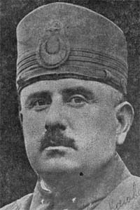

Kâzým Karabekir (1882-1948)

Milli Mücadelenin önde gelen simalarýndandýr. Asker, siyaset ve devlet adamýdýr. Kurtuluþ Savaþý'ndaki ünvaný "Þark Fatihi"dir. Özellikle Meþrutiyet döneminde Bediüzzaman Hazretleri ile dostane iliþkiler içinde bulunan bir komutandýr. Cumhuriyet tarihimizin ilk muhalefet partisinin kurucusudur. Takrir-i Sükûn kanununa karþý yaptýðý konuþma büyük öneme haizdir.Karabekir, 1882 yýlýnda Ýstanbul'da doðdu. Babasý, Karamanlý Mehmed Emin Efendi, Kýrým Gazisidir. Annesi, Havva Hanýmdýr. Ýlk öðrenimine Ýstanbul Zeyrek'te baþladý. Babasýnýn seyahatlerinden ötürü orta öðrenimini Van, Harput ve Mekke'de devam ettirdi. Fatih Askeri Rüþdiyesi ve Kuleli Askeri Ýdadisini tamamladýktan sonra Kara Harp Okuluna, burayý bitirdikten sonra (1902) Harp Akademisine girdi. Okulunu birincilikle bitirdi. Kurmay Yüzbaþý olarak mezun oldu ve stajýný Manastýr'da yaptý.
Manastýr'da bulunduðu süre zarfýnda Rum ve Bulgar komitecileriyle yaptýðý mücadelelerde önemli baþarýlar elde etti. 1907 yýlýnda "önyüzbaþý" rütbesi ile Harbiye Mektebine tayin edildi. Bu arada Ýttihad ve Terakki Cemiyeti içinde aktif görevlerde bulundu. 31 Mart Olayý sonrasýnda Hareket Ordusu bünyesinde Ýstanbul'a geldi. Yýldýz Sarayý'nýn iþgaline katýldý. Bir süre sonra Edirne'ye "binbaþý" rütbesi ile döndü. Balkan Savaþlarýna katýldý. Savaþtan sonra bir Alman heyetinde görev alarak Avrupa'ya gitti.
Birinci Dünya Savaþý boyunca çeþitli cephelerde bulundu. Önce Ýran harekâtýna memur edildi. Daha sonra Ýstanbul'a çaðrýldý ve Kartal'daki 14. Fýrka Kumandanlýðýna tayin edildi. Çanakkale Savaþlarýna katýldý. Bunlarýn dýþýnda; Irak'taki Altýncý Ordu Kurmaybaþkanlýðý, Kutü'l-Ammare Muharebesi, Erzincan'daki Birinci Kafkas Kolordu Komutanlýðý gibi görevlerde bulundu. Doðudaki katliâmlarýn önüne geçmek için muhtelif giriþimlerde bulundu. Bilâhare tuðgeneralliðe terfi etti.
Karabekir'in en önemli baþarýlarý Mondros Mütarekesi'nden sonrasýna rastlar. Yurdun iþgaline paralel olarak mücadeleye Anadolu'dan baþlanýlmasý gerektiðine inanan ve Anadolu'ya bu amaçla geçen ilk komutan oldu. Kendisine Genelkurmay Baþkanlýðý teklif edildiði halde kabul etmedi. Anadolu'ya geçmeden önce Sultan Vahdettin ile görüþtü ve Anadolu'da milli mücadelenin baþlatýlmasý ile görevlendirildi. Önce Tekirdað'daki 14. daha sonra Erzurum'daki 15. Kolordu Komutanlýðýna tayin edildi.
Göreve baþladýktan sonra Ýtilaf Devletlerinin tüm baský ve tehditlerine raðmen Erzurum Kongresini toplamaktan vazgeçmedi. Daha önceden kimlerin kongreye katýlacaðý belirlenmiþti. Sonradan gelen M. Kemal'in katýlmasýna karþý çýkýlmasý üzerine Karabekir devreye girdi. Ýstifa ettirilen iki delegenin yerine M. Kemal ve Rauf Beyin katýlmalarýný saðladý. Milli Mücadelenin önemli temel taþlarýndan olan Erzurum Kongresi ve kararlarýnda, büyük gayret ve emek sahibi oldu. Doðudaki Ermeni iþgaline karþý büyük bir mücadeleye giriþti. Ermeni ordusunu Sarýkamýþ daðlarýnda ve Kars kalesinde maðlup ederek büyük bir baþarý kazandý. Bu zafer sonrasýnda "Elviye-i Selase" olarak tabir edilen Kars, Ardahan ve Artvin'in düþman iþgalinden kurtarýlmasýný saðladý.
Doðuda kazanýlan zafer ve imzalanan Gümrü Anlaþmasý (1920) Milli Mücadelenin ilk milletlerarasý antlaþmasýdýr. Bilâhare Rusya, Ukrayna, Azerbaycan, Gürcistan ve Ermenistan temsilcileriyle yapýlan görüþmelere Türk heyetinin baþkaný olarak katýldý. 13 Ekim 1921 yýlýnda imzalanan Kars Antlaþmasý ile bu günkü Türkiye-Rusya sýnýrý çizilmiþ oldu. Buradaki savaþýn büyük bir baþarý ve antlaþma ile neticelenmesinden sonra, askeri malzeme ve personel Batý cephesine kaydýrýldý.
Milli Mücadele sýrasýnda gösterdiði kahramanlýk ve baþarýlarý konusunda Ýnönü; Birinci Cihan Harbi'nin felâketli neticesinin ilk gününden baþlayarak meydana atýldýðýný, Batý cephesinde gerçekten bunaldýðýmýz bir zamanda imdada yetiþtiðini belirtmektedir. Mustafa Kemal'in tutuklanýp Ýstanbul'a gönderilmesini talep eden Ýtilaf Devletlerinin isteðini yerine getirmediði bilinmektedir. Bu konuda Rauf Orbay, "Karabekir hiçbir þey için olmasa bile, sadece bunun için dahi Milli Mücadele'nin temelidir, direðidir" ifadelerine yer vermektedir.
Meclisin açýlmasý ile birlikte Edirne Mebusu seçildi. 1923 yýlýndaki seçimlerde ise ikinci devre Ýstanbul Milletvekili seçildi. Tek parti iktidarýnýn kurulmasýndan sonra Cumhuriyet tarihimizin ilk muhalefet partisini kurdu. Karabekir'in baþkanlýðýnda Rauf Orbay, Ali Fuat Cebesoy, Refet Bele, Cafer Tayyar Eðilmez ve diðer bazý mebuslar tarafýndan Terakkiperver Cumhuriyet Fýrkasý kuruldu (1924). Þeyh Said olayý ile baðlantýsý olduðu ileri sürülerek bu parti kapatýldý. Parti ileri gelenleri Ýstiklâl Mahkemesinde yargýlandý.
Çeþitli iftiralara uðrayan Karabekir'in, anti-demokratik uygulamalara karþý çýkmasýndan dolayý saf dýþý býrakýlmak maksadýyla, düzmece senaryolar ve sûikast giriþimleri ile baðlantýsý olduðu ileri sürülerek uzun bir süre Meclis dýþýnda kalmasý saðlandý. 1927 yýlýnda ordudan emekliye sevk edildi. Bunun üzerine Ýstanbul'a gidip yerleþti ve 1938 yýlýna kadar burada kaldý.
1938 yýlýnda Ýstanbul Milletvekili olarak tekrar Meclise girdi. 1946 yýlýnda Meclis Baþkanlýðýna seçildi. Baþkanlýk görevi devam ederken 26 Ocak 1948 tarihinde geçirdiði kalp krizi sonucu vefat etti. Naaþý Ankara Þehitliðine defnedildi.
Bediüzzaman ve Karabekir arasýndaki münasebetler hakkýnda ayrýntýlý bilgi olmamakla birlikte, aralarýnda bir dostluðun olduðu tahmin edilmektedir. Karabekir, Bediüzzaman'ýn Ruslara karþý talebeleriyle birlikte savaþtýðýndan haberdardýr. Aziz Tayyar'ýn hatýralarýnda; Karabekir'in Bediüzzaman'a hayranlýðýndan, Ruslara karþý yaptýðý savaþý takdir ettiðinden ve onu görmek istediðinden söz edilmektedir. (Son Þahitler, C. II, s. 79-80) Bediüzzaman'ýn dâvet üzerine Ankara'ya gelip özellikle namaz konusuna aðýrlýk veren bir beyannameyi neþretmesi ve bu beyannamenin Karabekir Paþa tarafýndan M. Kemal'e götürülüp okunmasý, daha önceden bir dostluðun olduðuna delil olabilir.
Emirdað Lâhikasý'nda yer alan (s. 156) bir mektubundan anladýðýmýza göre Bediüzzaman'ýn bazý dostlarý, o dönemde Meclis Baþkaný olan Karabekir'den Nur Talebelerinin sýkýntýlarýný gidermek için yardým talebinde bulunmayý düþünmüþlerdir. Fakat Bediüzzaman, istirahati için þikâyet ve ricada bulunmayacaðýný, kendisine verilen sýkýntýlara, "Allah bana yeter. O ne güzel vekildir." (Ali Ýmran; 173) ayetini okuyup tahammül ettiðini belirtmektedir. Akabinde, Karabekir ile eskiden dost olduklarýný, hâlâ merdane mesleðini muhafaza edip etmediðini sormakta, eskiden olduðu gibi Nurlara zararý olmayýp faydasý varsa selâmýnýn kendisine iletilmesini istedir. Ancak, ahiret hayatlarý için Nurlara müracaat etmeye tenezzül etmeyenlere karþýlýk, ahiret hayatýnýn yanýnda hiçbir önemi olmayan dünya hayatý için de siyasetçilere tenezzül edilemeyeceðini sözlerine eklemektedir. Yine bir baþka mektubunda da (Emirdað Lâhikasý, s. 170) Karabekir'den iyilik istemediðini, sadece seleflerinin yapmýþ olduklarý tayzik ve zulme meydan vermemesinin yeterli olacaðýný belirtmektedir.
Eserleri
Mutlakiyet, Meþrutiyet, Tek parti ve çok partili hayat gibi çok farklý dönemleri yaþayan Karabekir, önemli eserlere de imza attý. Özellikle "Ýstiklâl Harbimiz" adlý eseri önemli bir yere sahiptir. Bu büyük eser ancak 1968'de yayýmlanabildi. Ýstiklâl Harbimizin Esaslarý adlý eseri Takrir-i Sükûn döneminde toplatýlýp yakýldý. Ýktisadi Esaslarýmýz, Sanayi Projeleri, Ermeni Meselesi, Ülkümüz Kuvvetli Bir Türkiye'dir, Öðütlerim adlý muhtelif eserler kaleme aldý.